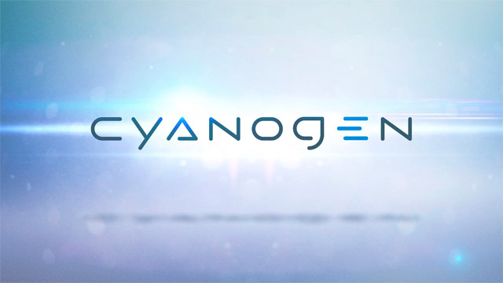

Deslumbrando o futuro: vejamos as maiores apostas de 2017 para os games!
Postado em 25 de dezembro de 2016
Mais um ano chega ao fim para a tão amada indústria dos games. Um mercado que se constrói a partir da base de fãs, que têm de receber, semanalmente, mensalmente, anualmente, aquela cestinha de jogos fresquinhos. Vários títulos promissores de 2016 foram adiados para 2017, ou seja, o ano que vem promete MUITO!
Postado por Harlan CleitonSuporte oficial ao Cyanogen acaba na semana que vem, dia 31 de dezembro
Postado em 23 de dezembro de 2016 A Cyanogen anunciou que os seus serviços e as builds noturnas disponibilizadas para os usuários do Cyanogen vão acabar junto com o ano. No dia 31 de dezembro a empresa vai descontinuar os recursos como parte de sua "consolidação", como diz a declaração abaixo:
"Como parte da consolidação contínua do Cyanogen, todos os serviços suportados pelo Cyanogen e builds noturnas serão descontinuados não depois do dia 31/12/16. O projeto open source vai continuar disponível para qualquer um que queira construir o CyanogenMod pessoalmente."
O CyanogenMod, sendo uma iniciativa open source e impulsionada pela comunidade, vai continuar normalmente, mas sem envolvimento algum dos fundadores da Cyanogen, Lior Tal e Steve Kondik, que agora dissolveram sua parceria.
Postado por Harlan Cleiton